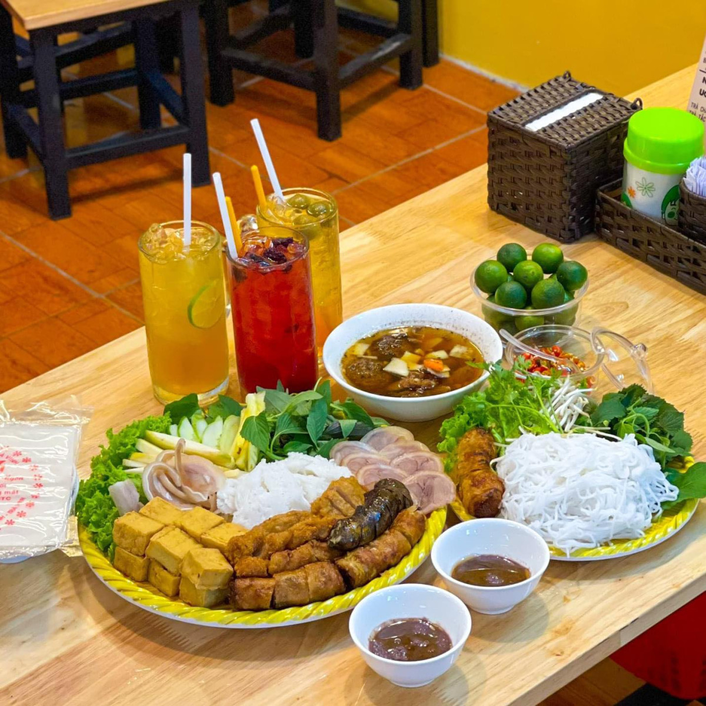
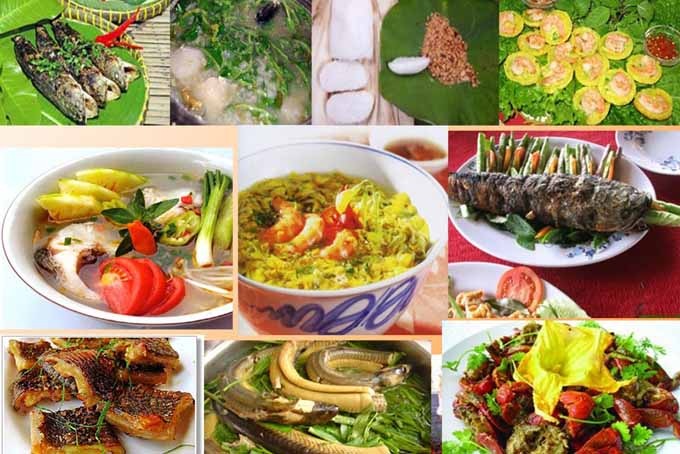

1. Ẩm Thực Việt Và Tinh Thần Phá Cách
Ẩm thực Việt Nam vốn nổi tiếng bởi sự hài hòa giữa hương vị, màu sắc và cách chế biến. Ngày nay, nhiều người trẻ mạnh dạn phá cách trong cách ăn uống: kết hợp món truyền thống với phong cách hiện đại để tạo trải nghiệm mới mẻ hơn.
Tuy nhiên, phá cách không đồng nghĩa với tùy tiện. Một bữa ăn ngon vẫn cần đảm bảo sự cân bằng và an toàn cho sức khỏe.
2. Những Kiểu Phá Cách Phổ Biến Hiện Nay
- 🍜 Bún, phở kết hợp topping mới (thịt nướng, hải sản, sốt lạ)
- 🥖 Bánh mì truyền thống biến tấu theo phong cách Âu – Á
- 🌶️ Gia giảm gia vị để hợp khẩu vị giới trẻ
- 🥗 Ăn món Việt theo hướng “healthy”
3. Phá Cách Nhưng Vẫn Phải An Toàn

Khi thử nghiệm cách ăn uống mới, điều quan trọng nhất vẫn là đảm bảo vệ sinh thực phẩm và sự phù hợp với cơ thể.
- ✅ Nguyên liệu rõ nguồn gốc, chế biến sạch sẽ
- ✅ Không kết hợp thực phẩm một cách cực đoan
- ✅ Ăn vừa đủ, không chạy theo trào lưu mù quáng
4. Kết Luận

Sự phá cách trong phong cách ăn uống ẩm thực Việt là dấu hiệu tích cực của sự sáng tạo và hội nhập. Khi biết chọn lọc và lắng nghe cơ thể, chúng ta hoàn toàn có thể thưởng thức những trải nghiệm mới mà vẫn giữ được sự an toàn và tinh tế vốn có. Ngoài ra yếu tố vùng miền cũng tác động không nhỏ đến khẩu vị thực khách Tuy rằng chịu nhiều ảnh hưởng của nền ẩm thực du canh du cư từ nơi khác đến, nhưng người miền Nam vẫn giữ cho mình khẩu vị riêng biệt của tổ tiên truyền lại. Nếu như với vị ngọt thì không phải sự ngọt nhẹ nhàng và vị ngọt người miền Nam sử dụng phải là ngọt ngậy ngọt khé, vị chua cực và mặn cực gắt, vị đắng thì được ví như mật hay vị cay thì phải thật nồng.